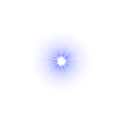

when clickedhiderepeat39initializecreate clone ofmyselfinitializedefineinitializepoint in directionsetspeedtowhen I receivepaintifthenstate=5move stepswhen I receiveexplodesetbrightnesseffect to100setghosteffect to0go to x:0y:0go to frontshowrepeat10wait0.1secschangebrightnesseffect by-10repeat10wait0.1secschangeghosteffect by10hide